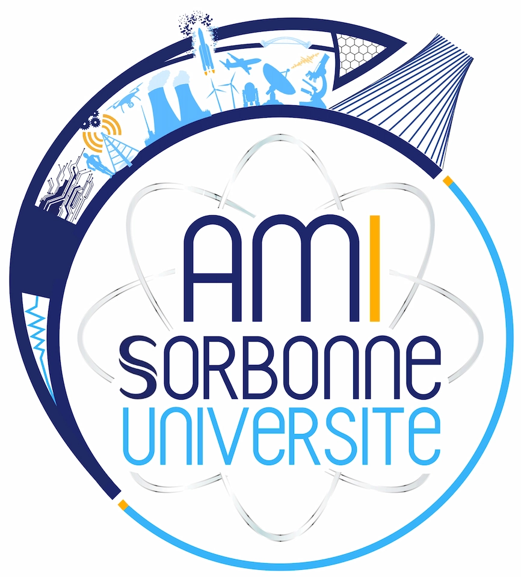
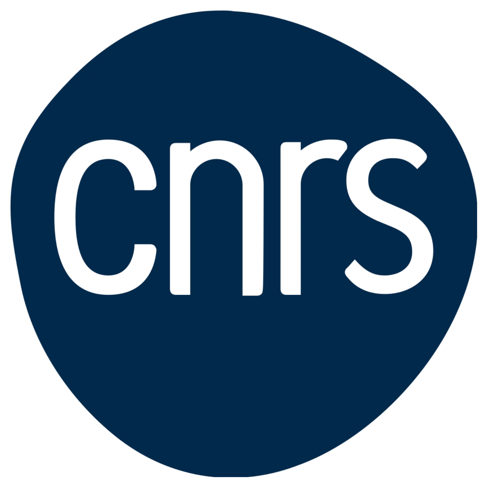
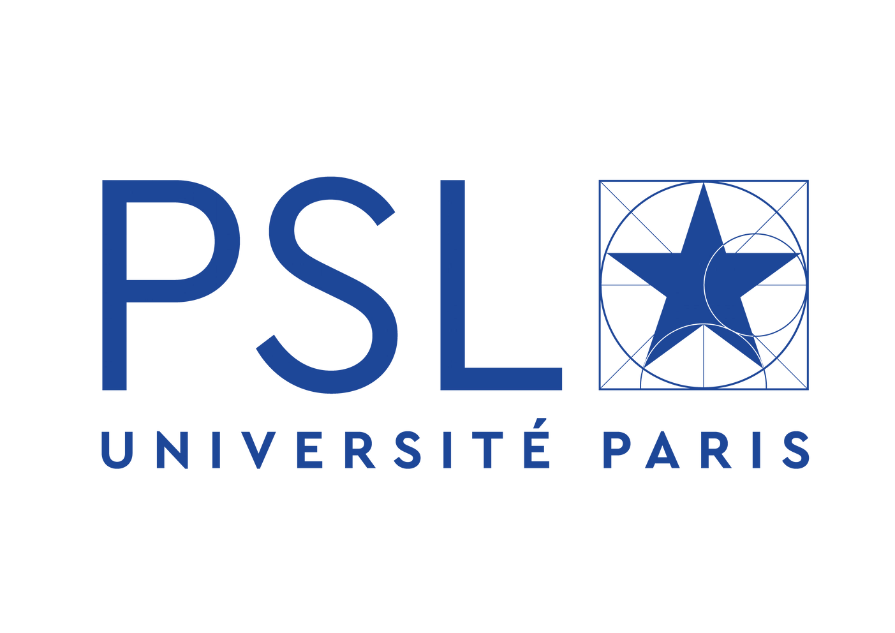
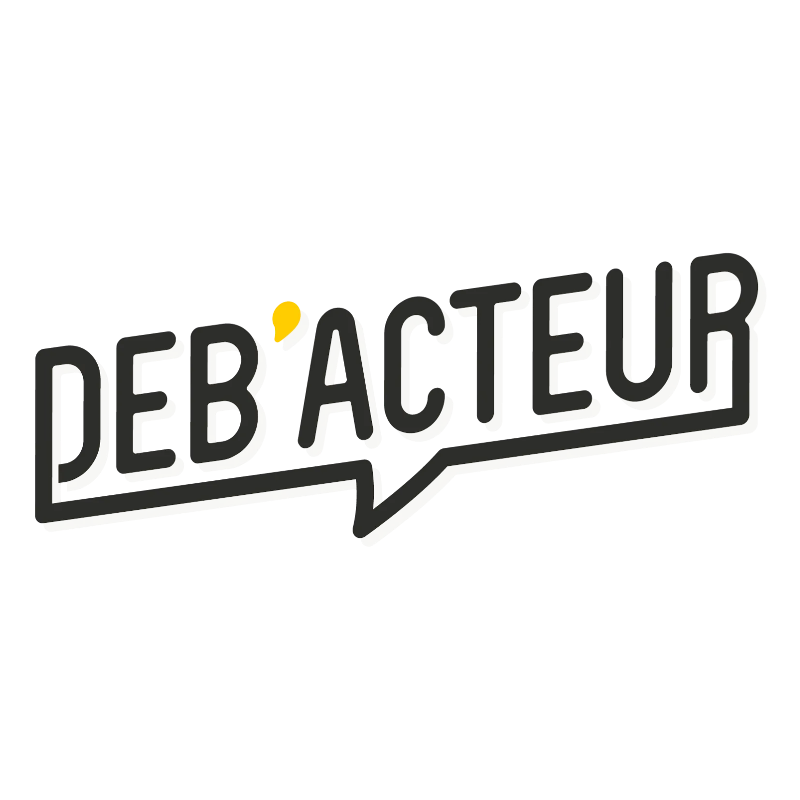
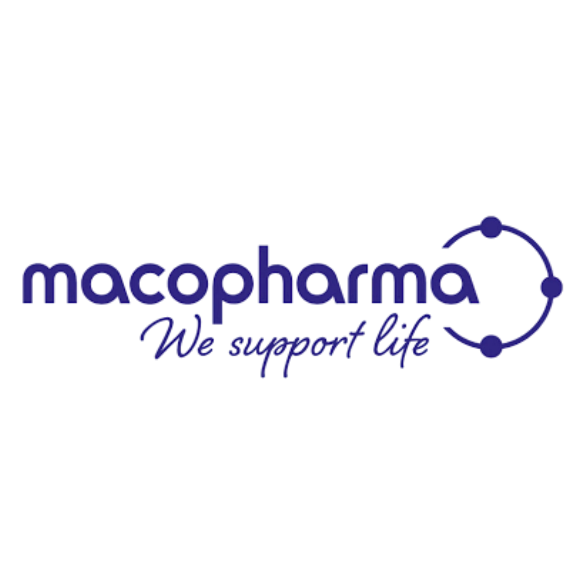
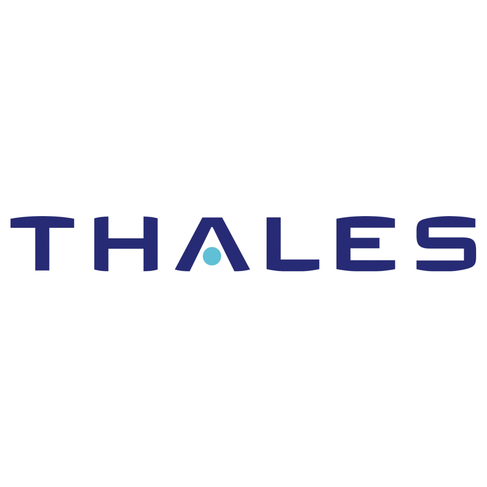
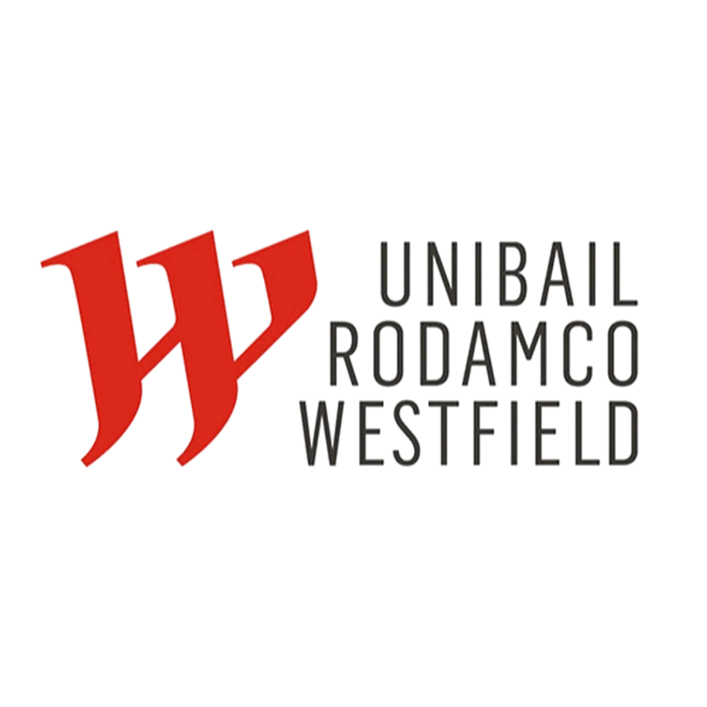
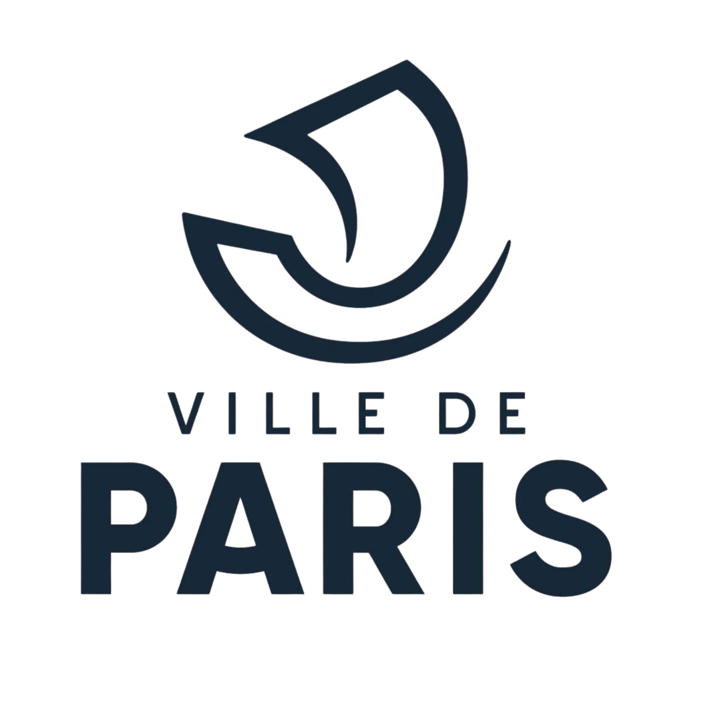

Formation
Prise de parole, pitch, storytelling, management, leadership et formats en ligne.
Découvrir →Des ateliers vivants, concrets et exigeants pour parler clair, décider mieux et embarquer les équipes.
 ★★★★★
★★★★★ Organisme de formation certifié
Organisme de formation certifié







Prise de parole, pitch, storytelling, management, leadership et formats en ligne.
Découvrir →Accompagnement individuel ou dirigeant pour préparer une intervention à fort enjeu.
Voir les coachings →Simulateur ROI
Estimez en 30 secondes combien votre entreprise peut économiser dès cette année avec Letmotiv.
Témoignages
 Vincent RecrosioSenior Tech Recruiter chez Meetic
Vincent RecrosioSenior Tech Recruiter chez MeeticJe vous invite à contacter Pierre pour tout besoin de formation en communication ! J'ai suivi sa formation "Prise de parole en public". Pierre est passionné et partage sa bonne énergie, dans le but de transmettre, ses méthodes rapidement applicables. Ses ateliers, issus du théâtre, sont méticuleusement adaptés à chaque public. Une attitude très professionnelle.
 Julia GalvezManager chez Hubspot
Julia GalvezManager chez HubspotPierre est un vrai “Master” de la prise de parole en public. J’ai eu le plaisir de participer à ses cours le semestre dernier. Sa bienveillance, son courage et son audace on été très contagieux! Merci encore pour tes enseignements et tes méthodes qui me sont aujourd’hui très utiles au quotidien. Jamais le mot “Galaxie” aura eu autant de sens. Pouvoir captiver son public, c’est une compétence qui se travaille et Pierre nous partage son savoir de façon ludique et maîtrisé. Encore un GRAND MERCI.
 Cédric RémyManager chez Orange
Cédric RémyManager chez OrangeApres 3 jours de formation sur la prise de parole en public, je peux affirmer que Pierre est soucieux de son travail, bienveillant et très compétant. J’ai réellement adoré sa formation qui se veut dynamique, ciblée et au contenu passionnant. Ses talents et son énergie sont transmis de la première à la dernière minute. Je recommande très fortement Pierre et ses compétences.
 Crazy NoussFacilitatrice graphique et illustratrice
Crazy NoussFacilitatrice graphique et illustratriceOn apprend à se dépasser, le tout dans un cadre dynamique, bienveillant et ludique. On en ressort avec l'envie de toute de suite réaliser un discours. Pierre un grand patient, à l'écoute et plein d'énergie. Il saura vous faire travailler rapidement sur vos points faibles et parallèlement mettre en avant vos points forts. N'oubliez pas : Pierre ne recule devant aucun défi. Mieux que ça, il pousse à donner le meilleure de vous-même !
 Gabrielle Rosner-BlochConseillère Régionale du Grand Est
Gabrielle Rosner-BlochConseillère Régionale du Grand EstPierre Li Cavoli est un excellent professeur de prise de parole en public et un excellent coach. Pas étonnant quand on sait qu'il a été Docteur dans une autre vie. Professionnel, rigoureux, très à l'écoute, j'ai appris en deux jours autant sur la théorie de la prise de parole, de l'art de convaincre et d'argumenter, que sur la mise en pratique...et sur moi-même. Une formation et un formateur que je recommande sans hésiter !